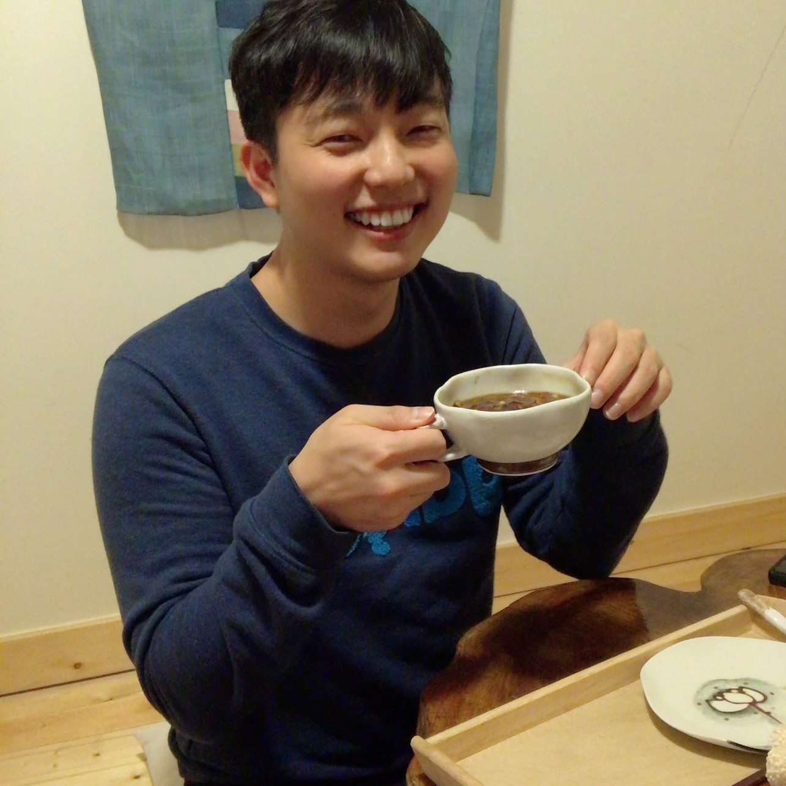

ACADEMIC WEBSITE
Jaeyong
Jung.
Ph.D. Student · Colorado State University
Energy Economics · Environmental Economics · Econometrics

JAEYONG JUNG / CSU
01 / ABOUT
About Me
I am a Ph.D. student at Colorado State University. My research interests lie in energy economics, environmental economics, and econometrics.
My work combines econometric methods, machine learning, and large-scale environmental data to study electricity markets, environmental externalities, and the economic consequences of forecast uncertainty. I am also interested in developing and evaluating econometric methods for empirical research.
02 / CONTACT
Get in touch
Colorado State University
Fort Collins, Colorado